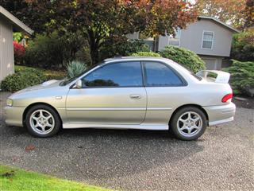
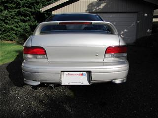
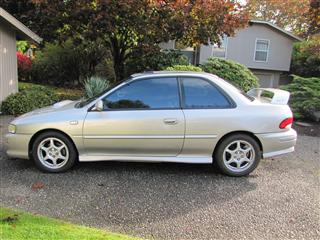
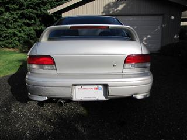

 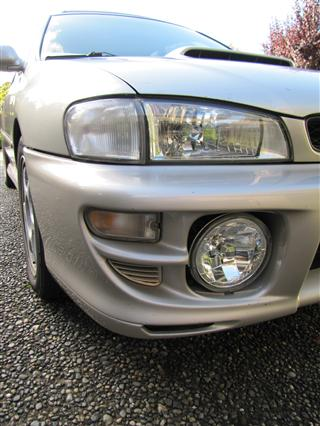
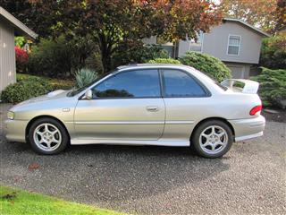
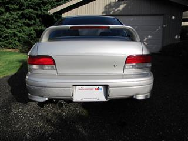
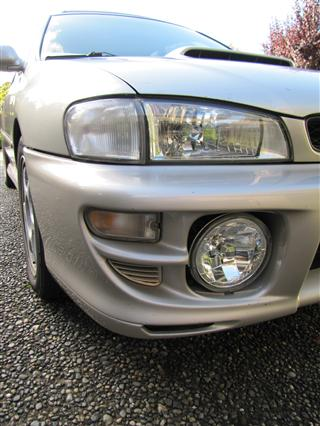
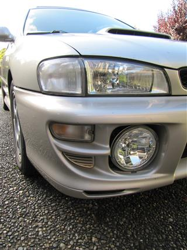
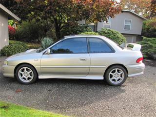
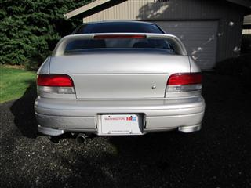
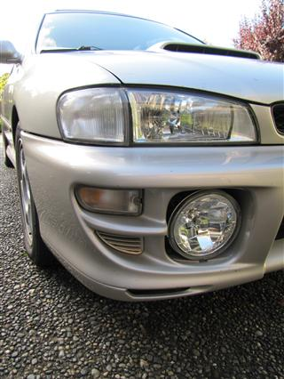
In April of 2000, I barely dodged a head-on collision when someone crossed the double-yellow line right in front of me. His Baretta hit my door at approximately 55mph, and pinned me against a guardrail. The Subaru did a terrific job of protecting me, and I walked away from the accident.
As you can see from the pictures the car sustained quite a bit of damage, but it was not totaled out, and it was repaired thoroughly. The car sat in the shop for 3.5 months waiting for Subaru parts, and then after 2.5 more months, it was returned to me looking like new again. It was almost entirely body damage and the car retains a clean title.
There are a few body panel gaps that don't line up perfectly, and I occasionally get moisture in the trunk, but otherwise the car shows no signs of having been in this wreck.
Currently, the car has a few bumps and bruises, a broken rear bumper, and a little minor rust (more info/pics). It runs like new, but the head gaskets have recently started leaking (more info).
Contact: forsale@2000subaru.com